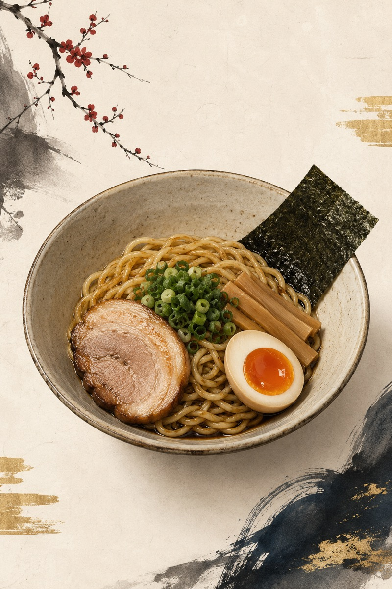
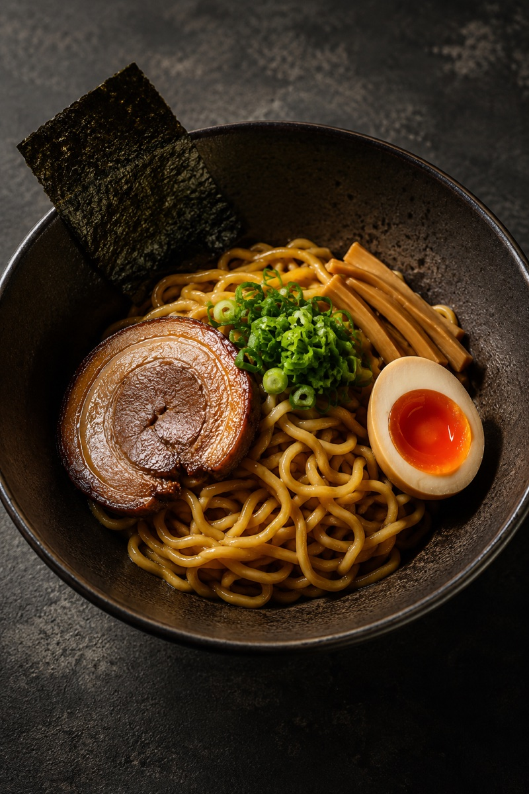

同じ油そばの一杯を、2つの方向で。これは No.001 だけでなくシリーズ全体（ラーメン→焼肉→パン…）のビジュアル基盤を決める一手。方向だけ先に固めれば、確定後に cover＋章扉を一括で揃えてテンプレ化できる。


v4 の方向は正解だと思う。ただし v4 そのままだと「どこかで見た高級ラーメン写真」になりやすい。
第3の道＝ v4 の現代性 ＋ 独自署名（伝統モチーフでない現代的なブランド要素：色・余白設計・タイポ・1つの記号）を足すと、今っぽさと ownability を両取りできる。あるいは dark でなく明るいミニマル（Kinfolk×東京）も "NYで通る和" の別解。
比較用ページ（非公開・noindex）。現 live の cover/章扉は v3 和モダンのまま。B/C なら次サンプルを出します。
2026-06-14 素子